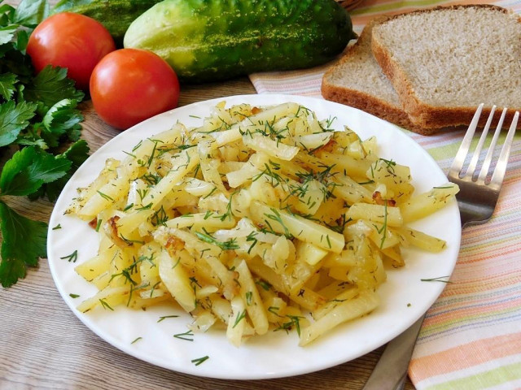

Жаренная картошка

Описание
Жареный картофель — гарнир ко вторым блюдам или самостоятельное блюдо
Необходимые ингридиенты
- Картошка - 600 г
- Лук - 1 шт
- Растительное масло - 30 г
- Соль - по вкусу
- Специи - по вкусу
Приготовление
-
Для жарки используйте клубни среднего размера. Ни в коем случае не берите позеленевшие или
подмороженные. Хороший картофель должен быть ровный, равномерного цвета и без повреждений.
Выбранный картофель промойте от земли и очистите с помощью овощечистки.
-
Очищенный картофель промойте в холодной воде. Это смоет лишний крахмал, благодаря чему
картофель при жарке не будет разваливаться.
- Затем воду слейте и картофель немного обсушите.
-
Для жарки возьмите обычный репчатый лук. Очистите его, промойте и нарежьте на кусочки.
-
На горячую сковороду с высокими бортиками налейте немного растительного масла и выложите
нарезанный лук. Обратите внимание, что чем больше будет масла, тем калорийнее получится
блюдо. Обжарьте лук до слегка золотистого цвета. Следите за тем, чтобы он не подгорел.
Сковороду для жарки используйте пошире, чтобы картофель на ней был как можно более тонким
слоем. Таким образом он прожарится более равномерно и будет именно жариться, а не тушиться.
-
Затем добавьте в сковороду к луку нарезанный картофель. Все хорошо перемешайте и готовьте на
среднем огне минут 15. Время приготовления указано приблизительно и будет зависеть от сорта
картошки, размера сковороды и т.п.
-
Не забывайте в процессе жарки периодически картофель перемешивать. Очень удобно это делать
деревянной лопаткой. В конце готовки картофель посолите и добавьте немного сухих специй.
Перемешайте аккуратно и снимайте с огня. Так как вкусы у всех разные, кто-то любит более
румяную картошку, кто-то нет, ориентируйтесь на свои предпочтения. Подавайте в горячем виде.
Приятного аппетита!
На главную
Источник рецепта